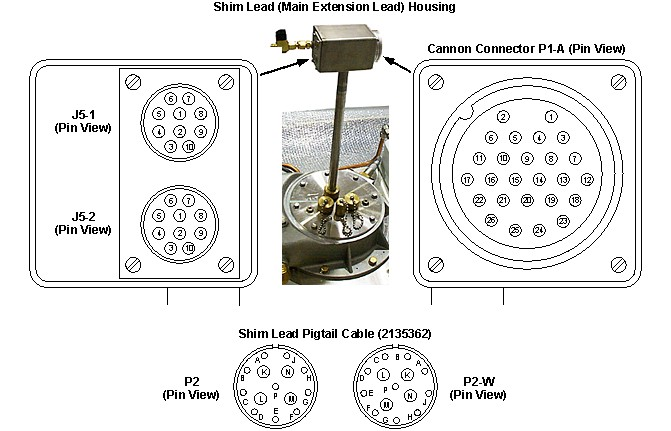

Operating Documentation
Direction 5670000, Rev# 1
Optima MR450w 1.5T Service Methods
Module Version 4.0, Version Date 12/10/09
Operating Documentation |
| Required Persons | Preliminary Reqs | Procedure | Finalization |
|---|---|---|---|
| 1 | Included in 'Procedure' | 1.5 hours | Included in 'Procedure' |
This section provides “go" / “no go" tests for internal magnet circuitry faults before ramping the magnet.
| Item | Qty | Effectivity | Part# | Manufacturer | |
|---|---|---|---|---|---|
| Digital Volt-Ohm Meter (DVM) or Digital Multimeter (DMM) | 1 | - | - | - | |
| HDv Service Platform | 1 | - | 5155291-2 | - | |
| Service Methods documentation for the magnet/enclosures (available through the Common Document Library at gehealthcare.com or through your local GE Healthcare Service Representative) | 1 | - | - | - | |
| ||||
| Potential Magnet Quench! | ||||
| Contact with connector pins while the magnet is ramped may cause a magnet coil quench. | ||||
| Make sure the main and shim coils are ramped down to zero amps before starting the magnet Electrical Checks procedure. |
| Condition | Reference | Effectivity |
|---|---|---|
Make sure the magnet is at zero field in conformance with Magnet Rampdown to Zero Field before starting the Magnet Electrical Checks procedure. | - | |
All superconducting coils measured must be cold (4.2K) for the resistance values shown in Table 1, Table 2 and Table 3 to be accurate. | - | - |
The Shim Lead Assembly must be fully “Engaged” in conformance with Shim Lead Engagement and Disengagement in order to obtain resistance data. | - | |
The removal of some magnet enclosure components may be required to complete Magnet Electrical Checks. Refer to Enclosure Removal and Installand the appropriate Service Methods documentation (available through the Common Document Library at gehealthcare.com or through you local GE Healthcare Service Representative) before continuing with Magnet Electrical Checks if cover removal is required. | - |
“Engage" the Shim Lead Assembly in conformance with Shim Engagement and Disengagement.
Locate the connector pins using Table 1, Table 2, Table 3 and Illustration 1.
| NOTE: | Wiring is shown in Magnet System Wiring. |
Use a digital meter to measure the resistance across the identified connector pins.
Measure the resistances and record, under “Measured”, Main Coil resistances in Table 1, S/C Shim Coil resistances measured on the Shim Lead in Table 2 and S/C Shim Coil resistances measured on the Shim Lead Pigtail Cable in Table 3.
Report all “Measured” readings outside the acceptable range (“Typical” values in Table 1, Table 2 and Table 3) to the Regional Magnet & Cryogens (MAC) Team Leader for further investigation before ramping the magnet.
Illustration 1: Connector Pinouts

Table 1: Magnet Circuits Resistance Checks, Main Coil, Cold (4.2K)
| Connector | Pins | Resistance (Ohms) | ||||
|---|---|---|---|---|---|---|
| Typical | Measured | |||||
| +, - | W0 Series | WB Series | ||||
| Main Coil Power Lugs | +, - | < 6 | ||||
| J5-1 on Shim Lead | 9, 10 | < 6 | ||||
Table 2: Superconducting Shim Coil Resistance Checks, Cold (4.2K), Measured on Shim Lead
| Function | Connector | Pins | Resistance (Ohms) | |||
|---|---|---|---|---|---|---|
| Typical | Measured | |||||
| Shim PS Setting | Shim Coil Circuit | +, - | W0 Series | WB Series | ||
| AX1 | Z1 | P1-A | 1, 19 | 0.2 - 0.6 | 0.2 - 0.8 | |
| AX2 | Z2 | 2, 20 | ||||
| AX3 | Z3 | 3, 21 | ||||
| AX4 | Z4 | 4, 22 | ||||
| AX5 | Z5 | 5, 23 | Not Applicable | |||
| AX6 | Z6 | 6, 24 | Not Applicable | |||
| T1-1 | Z(X2-Y2) | 13, 23 | 0.2 - 0.6 | |||
| T1-2 | X | 16, 19 | ||||
| T1-3 | Z2X | 14, 21 | ||||
| T1-4 | ZX | 17, 20 | ||||
| T1-5 | X2-Y2 | 15, 22 | ||||
| T1-6 | X3 | 18, 24 | Not Applicable | |||
| T2-1 | ZXY | 11, 23 | 0.2 - 0.6 | |||
| T2-2 | Y | 9, 19 | ||||
| T2-3 | Z2Y | 7, 21 | ||||
| T2-4 | ZY | 10, 20 | ||||
| T2-5 | XY | 8, 22 | ||||
| T2-6 | Y3 | 12, 24 | Not Applicable | |||
| S/C Switch Heaters Main Switch | J5-1 or J5-2 | 1, 2 | 22 - 27 | |||
| Axial Shims | 5, 6 | 12 - 15 (8.5 - 12*) | 18 - 22 | |||
| Transverse 1 | 7, 6 | 8.5 - 12 | 13 - 16 | |||
| Transverse 2 | 8, 6 | 8.5 - 12 | 13 - 16 | |||
| * Magnets W00001 - W00024, W00026, W00027, W00030, W00032 - W00035 and W00038 - W00040 only. | ||||||
Table 3: Superconducting Shim Coil Resistance Checks, Cold (4.2K), Measured on Shim Lead Pigtail Cable
| Function | Connector | Pins | Resistance (Ohms) | |||
| Typical | Measured | |||||
| Shim PS Setting | Shim Coil Circuit | +, - | W0 Series | WB Series | ||
| AX1 | Z1 | P2 | A, (K,L) | 0.2 - 0.7 | 0.2 - 0.8 | |
| AX2 | Z2 | P2-W | ||||
| AX3 | Z3 | P2 | B, (M,N) | |||
| AX4 | Z4 | P2-W | ||||
| AX5 | Z5 | P2 | C, P | Not Applicable | ||
| AX6 | Z6 | P2-W | Not Applicable | |||
| T1-1 | Z(X2-Y2) | P2 | D, P | 0.2 - 0.7 | ||
| T1-2 | X | F, (K,L) | ||||
| T1-3 | Z2X | G, (M,N) | ||||
| T1-4 | ZX | P2-W | F, (K,L) | |||
| T1-5 | X2-Y2 | G, (M,N) | ||||
| T1-6 | X3 | D, P | Not Applicable | |||
| T2-1 | ZXY | P2 | E, P | 0.2 - 0.7 | ||
| T2-2 | Y | H, (K,L) | ||||
| T2-3 | Z2Y | J, (M,N) | ||||
| T2-4 | ZY | P2-W | H, (K,L) | |||
| T2-5 | XY | J, (M,N) | ||||
| T2-6 | Y3 | E, P | Not Applicable | |||
No finalization steps.